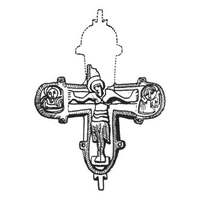

Catalog › CE-0987 · KOR2003-III.1.1.13
Valvă de față de encolpion fragmentară, Răstignire în relief și semifigurii gravate (Maica Domnului, Sf. Ioan)
sec. XII (1101–1200) · Kiev, gospodăria Zemstvei guberniale (colțul străzilor Bolșaia Vladimirskaia și Irininskaia), Ucraina · Institutul de Istorie a Culturii Materiale (IIMK RAN), Sankt Petersburg, secția de arheologie slavo-finică
single valve of a reliquary cross, aramă; c. XII (1101–1200); found at Kiev, gospodăria Zemstvei guberniale (colțul străzilor Bolșaia Vladimirskaia și Irininskaia), Ucraina; kept at Institutul de Istorie a Culturii Materiale (IIMK RAN), Sankt Petersburg, secția de arheologie slavo-finică.


Identificare
- Categorie
- Valvă izolată
- Material
- Aramă
- Tehnică
- Turnare în relief; Gravare (incizie)
- Stare
- Fragmentară
- Dimensiuni
- Î 57 × L 69 mm
Iconografie
- Avers
- Sf. Ioan
- Descriere avers
- Valvă de față fragmentară (rupt capătul de sus al crucii). S-a păstrat imaginea reliefată a Răstignirii în centru și semifigurile adstanților, Maica Domnului și Sf. Ioan Teologul, executate cu linii incizate adânci, pe laturi. În liniile adâncite nu sunt urme de niello. Nu există inscripții (poate un obiect neterminat?).
Datare și atribuire
- Datare
- sec. XII (1101–1200)
- Centru
- Necunoscut
- Tipologie
- Korzukhina–Peskova 2003, tip III 1 1
Descoperire
- Localitate
- Kiev
- Regiune
- gospodăria Zemstvei guberniale (colțul străzilor Bolșaia Vladimirskaia și Irininskaia)
- Țară
- Ucraina
- Context
- Necunoscut
- Anul
- 1913
Păstrare și referințe
- Colecție
- Institutul de Istorie a Culturii Materiale (IIMK RAN), Sankt Petersburg, secția de arheologie slavo-finică
- Bibliografie
- G. F. Korzukhina, A. A. Peskova, Древнерусские энколпионы. Нагрудные кресты-реликварии XI–XIII вв., Sankt-Petersburg, 2003 [Korzukhina–Peskova 2003], p. 104, cat. nr. III 1 1/13, reprodusă la Табл. 52 (planșe, p. 294). Bibliografie citată în sursă: Корзухина, архив ф. 77, д. 15, л. 46.
- Figura
- Табл. 52
- Planșe
- Korzukhina–Peskova 2003, Табл. 52 (planșă fără paginație proprie în PDF; p. 294 tipărită)
- Observații
- Datare după Peskova: sec. XII. Circumstanțe: Săpături D. V. Mileev, 1913. Dimensiuni: fragmentar: 5,7 cm păstrați. Desen: G. F. Korzuhina. Coordonate: nu sunt date în sursă.
Citare: Corpus Encolpiorum, CE-0987, Valvă de față de encolpion fragmentară, Răstignire în relief și semifigurii gravate (Maica Domnului, Sf. Ioan), --root/piese/KOR2003-III.1.1.13/ (accesat 2026-10-17).